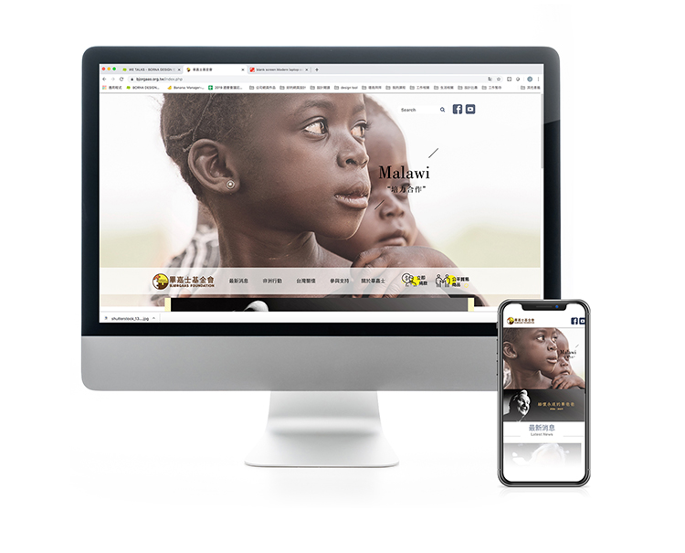

BJORGAAS FOUNDATION WEBSITE DESIGN
畢嘉士基金會官方網頁設計執行
畢嘉士基金會
・RWD
・內容產品上下架
・會員機制
・線上金流
・電商
造訪官網：
https://bjorgaas.org.tw/
伯納相信，因同理心讓我們一同聚首，我們站在客戶的角度去溝通與思考，經過溝通，以專業的視覺設計技巧，打造符合不同需求的獨特網站。
SHARE ON

能夠協助畢嘉士基金會打造全新官網，為地球上苦難的兒童盡一份心力，是伯納設計的榮幸。
打造公益形象的官網，感性面除了要讓人能夠信任與安心，理性面更要能夠兼顧做溝通完善與便利性，專案從整體架構，視覺形象到程式撰寫、測試等，花了近一年的時間完成，但果實是甜美的！不但提升了形象，更容易讓許多人認識「畢嘉士基金會」，架構清楚，閱讀舒服，捐款便利，最重的是藉由線上平台，讓善良透過線上平台，在這個地球持續進行。
造訪官網：bjorgaas.org.tw